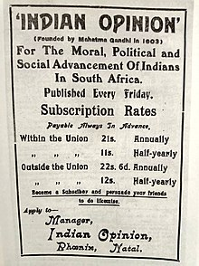

| Born | Mohandas karamchand Gandhi, 2 October 1869 Porbandar, Porbandar State, Kathiawar Agency, British India (present-day Gujarat, India) |
|---|---|
| Died | 30 January 1948 ( Aged78) |
| Cause of Death | Assassination (gunshot wounds) |
| Monument | Raj Gaht, Gandhi Smirti |
| Other Names | Bapu, Father of Nation |
| Citizenship | British(1869-1947) Dominion of India(1947-1948) |
| Occupation | Lawyer, anti-colonist,Political edthicist |
| Years active | 1893-1948 |
| Era | British Raj |
| Known For | Leadership of the campaign for India's independence from British rule Nonviolent resistance |
Mohandas Karamchand Gandhi (2 October 1869 – 30 January 1948) was an Indian lawyer, anti-colonial nationalist and political ethicist who employed nonviolent resistance to lead the successful campaign for India's independence from British rule. He inspired movements for civil rights and freedom across the world. The honorific Mahātmā (from Sanskrit 'great-souled, venerable'), first applied to him in South Africa in 1914, is now used throughout the world. Born and raised in a Hindu family in coastal Gujarat, Gandhi trained in the law at the Inner Temple in London, and was called to the bar in June 1891, at the age of 22. After two uncertain years in India, where he was unable to start a successful law practice, he moved to South Africa in 1893 to represent an Indian merchant in a lawsuit. He went on to live in South Africa for 21 years. There, Gandhi raised a family and first employed nonviolent resistance in a campaign for civil rights. In 1915, aged 45, he returned to India and soon set about organising peasants, farmers, and urban labourers to protest against discrimination and excessive land-tax. Assuming leadership of the Indian National Congress in 1921, Gandhi led nationwide campaigns for easing poverty, expanding women's rights, building religious and ethnic amity, ending untouchability, and, above all, achieving swaraj or self-rule. Gandhi adopted the short dhoti woven with hand-spun yarn as a mark of identification with India's rural poor. He began to live in a self-sufficient residential community, to eat simple food, and undertake long fasts as a means of both introspection and political protest. Bringing anti-colonial nationalism to the common Indians, Gandhi led them in challenging the British-imposed salt tax with the 400 km (250 mi) Dandi Salt March in 1930 and in calling for the British to quit India in 1942. He was imprisoned many times and for many years in both South Africa and India. Gandhi's vision of an independent India based on religious pluralism was challenged in the early 1940s by a Muslim nationalism which demanded a separate homeland for Muslims within British India. In August 1947, Britain granted independence, but the British Indian Empire was partitioned into two dominions, a Hindu-majority India and a Muslim-majority Pakistan. As many displaced Hindus, Muslims, and Sikhs made their way to their new lands, religious violence broke out, especially in the Punjab and Bengal. Abstaining from the official celebration of independence, Gandhi visited the affected areas, attempting to alleviate distress. In the months following, he undertook several hunger strikes to stop the religious violence. The last of these was begun in Delhi on 12 January 1948, when he was 78. The belief that Gandhi had been too resolute in his defense of both Pakistan and Indian Muslims spread among some Hindus in India. Among these was Nathuram Godse, a militant Hindu nationalist from Pune, western India, who assassinated Gandhi by firing three bullets into his chest at an interfaith prayer meeting in Delhi on 30 January 1948. Gandhi's birthday, 2 October, is commemorated in India as Gandhi Jayanti, a national holiday, and worldwide as the International Day of Nonviolence. Gandhi is considered to be the Father of the Nation in post-colonial India. During India's nationalist movement and in several decades immediately after, he was also commonly called Bapu (Gujarati endearment for "father", roughly "papa",[2] "daddy"[3]).
Parent
Gandhi's father, Karamchand Uttamchand Gandhi (1822-1885), served as the dewan (chief minister) of Porbandar state.[4][5] His family originated from the then village of Kutiana in what was then Junagadh State.[6] Although he only had been a clerk in the state administration and had an elementary education, Karamchand proved a capable chief minister.[7]
During his tenure, Karamchand married four times. His first two wives died young, after each had given birth to a daughter, and his third marriage was childless. In 1857, he sought his third wife's permission to remarry; that year, he married Putlibai (1844-1891), who also came from Junagadh,[7] and was from a Pranami Vaishnava family.[8] Karamchand and Putlibai had four children: a son, Laxmidas (c.1860-1914); a daughter, Raliatbehn (1862-1960); a second son, Karsandas (c.1866-1913).[9][10] and a third son, Mohandas Karamchand Gandhi[11][12] who was born on 2 October 1869[13] in Porbandar (also known as Sudamapuri), a coastal town on the Kathiawar Peninsula and then part of the small princely state of Porbandar in the Kathiawar Agency of the British Raj.
In 1874, Gandhi's father Karamchand left Porbandar for the smaller state of Rajkot, where he became a counsellor to its ruler, the Thakur Sahib; though Rajkot was a less prestigious state than Porbandar, the British regional political agency was located there, which gave the state's diwan a measure of security. In 1876, Karamchand became diwan of Rajkot and was succeeded as diwan of Porbandar by his brother Tulsidas. His family then rejoined him in Rajkot.[15]
Childhood
As a child, Gandhi was described by his sister Raliat as "restless as mercury, either playing or roaming about. One of his favourite pastimes was twisting dogs' ears." The Indian classics, especially the stories of Shravana and king Harishchandra, had a great impact on Gandhi in his childhood. In his autobiography, he states that they left an indelible impression on his mind. He writes: "It haunted me and I must have acted Harishchandra to myself times without number." Gandhi's early self-identification with truth and love as supreme values is traceable to these epic characters.
The family's religious background was eclectic. Mohandas was born into a Gujarati Hindu Modh Bania family. Gandhi's father Karamchand was Hindu and his mother Putlibai was from a Pranami Vaishnava Hindu family. Gandhi's father was of Modh Baniya caste in the varna of Vaishya. His mother came from the medieval Krishna bhakti-based Pranami tradition, whose religious texts include the Bhagavad Gita, the Bhagavata Purana, and a collection of 14 texts with teachings that the tradition believes to include the essence of the Vedas, the Quran and the Bible. Gandhi was deeply influenced by his mother, an extremely pious lady who "would not think of taking her meals without her daily prayers... she would take the hardest vows and keep them without flinching. To keep two or three consecutive fasts was nothing to her."
Gandhi (right) with his eldest brother Laxmidas in 1886
At age 9, Gandhi entered the local school in Rajkot, near his home. There, he studied the rudiments of arithmetic, history, the Gujarati language and geography.[15] At the age of 11, he joined the High School in Rajkot, Alfred High School. He was an average student, won some prizes, but was a shy and tongue tied student, with no interest in games; his only companions were books and school lessons.
Marriage
In May 1883, the 13-year-old Mohandas was married to 14-year-old Kasturbai Gokuldas Kapadia (her first name was usually shortened to "Kasturba", and affectionately to "Ba") in an arranged marriage, according to the custom of the region at that time. In the process, he lost a year at school but was later allowed to make up by accelerating his studies.[30] His wedding was a joint event, where his brother and cousin were also married. Recalling the day of their marriage, he once said, "As we didn't know much about marriage, for us it meant only wearing new clothes, eating sweets and playing with relatives." As was the prevailing tradition, the adolescent bride was to spend much time at her parents' house, and away from her husband.
Writing many years later, Mohandas described with regret the lustful feelings he felt for his young bride: "even at school I used to think of her, and the thought of nightfall and our subsequent meeting was ever haunting me." He later recalled feeling jealous and possessive of her, such as when she would visit a temple with her girlfriends, and being sexually lustful in his feelings for her.
In late 1885, Gandhi's father Karamchand died. Gandhi, then 16 years old, and his wife of age 17 had their first baby, who survived only a few days. The two deaths anguished Gandhi.[33] The Gandhi couple had four more children, all sons: Harilal, born in 1888; Manilal, born in 1892; Ramdas, born in 1897; and Devdas, born in 1900.
In November 1887, the 18-year-old Gandhi graduated from high school in Ahmedabad. In January 1888, he enrolled at Samaldas College in Bhavnagar State, then the sole degree-granting institution of higher education in the region. However, he dropped out, and returned to his family in Porbandar.
Student of Law
Gandhi had dropped out of the cheapest college he could afford in Bombay.[36] Mavji Dave Joshiji, a Brahmin priest and family friend, advised Gandhi and his family that he should consider law studies in London.[37][38] In July 1888, his wife Kasturba gave birth to their first surviving son, Harilal.[39] His mother was not comfortable about Gandhi leaving his wife and family, and going so far from home. Gandhi's uncle Tulsidas also tried to dissuade his nephew. Gandhi wanted to go. To persuade his wife and mother, Gandhi made a vow in front of his mother that he would abstain from meat, alcohol and women. Gandhi's brother Laxmidas, who was already a lawyer, cheered Gandhi's London studies plan and offered to support him. Putlibai gave Gandhi her permission and blessing.[35][40]
Gandhi in London as a law student
On 10 August 1888, Gandhi, aged 18, left Porbandar for Mumbai, then known as Bombay. Upon arrival, he stayed with the local Modh Bania community whose elders warned him that England would tempt him to compromise his religion, and eat and drink in Western ways. Despite Gandhi informing them of his promise to his mother and her blessings, he was excommunicated from his caste. Gandhi ignored this, and on 4 September, he sailed from Bombay to London, with his brother seeing him off.[39][36] Gandhi attended University College, London, where he took classes in English literature with Henry Morley in 1888–1889.[41]
He also enrolled at the Inns of Court School of Law in Inner Temple with the intention of becoming a barrister.[38] His childhood shyness and self-withdrawal had continued through his teens. He retained these traits when he arrived in London, but joined a public speaking practice group and overcame his shyness sufficiently to practise law.[42]
He demonstrated a keen interest in the welfare of London's impoverished dockland communities. In 1889, a bitter trade dispute broke out in London, with dockers striking for better pay and conditions, and seamen, shipbuilders, factory girls and other joining the strike in solidarity. The strikers were successful, in part due to the mediation of Cardinal Manning, leading Gandhi and an Indian friend to make a point of visiting the cardinal and thanking him for his work.[43]
Vegetarianism and committee work
Gandhi's time in London was influenced by the vow he had made to his mother. He tried to adopt "English" customs, including taking dancing lessons. However, he did not appreciate the bland vegetarian food offered by his landlady and was frequently hungry until he found one of London's few vegetarian restaurants. Influenced by Henry Salt's writing, he joined the London Vegetarian Society, and was elected to its executive committee[44] under the aegis of its president and benefactor Arnold Hills. An achievement while on the committee was the establishment of a Bayswater chapter.[45] Some of the vegetarians he met were members of the Theosophical Society, which had been founded in 1875 to further universal brotherhood, and which was devoted to the study of Buddhist and Hindu literature. They encouraged Gandhi to join them in reading the Bhagavad Gita both in translation as well as in the original.[44]
Gandhi had a friendly and productive relationship with Hills, but the two men took a different view on the continued LVS membership of fellow committee member Thomas Allinson. Their disagreement is the first known example of Gandhi challenging authority, despite his shyness and temperamental disinclination towards confrontation.
Allinson had been promoting newly available birth control methods, but Hills disapproved of these, believing they undermined public morality. He believed vegetarianism to be a moral movement and that Allinson should therefore no longer remain a member of the LVS. Gandhi shared Hills' views on the dangers of birth control, but defended Allinson's right to differ.[46] It would have been hard for Gandhi to challenge Hills; Hills was 12 years his senior and unlike Gandhi, highly eloquent. He bankrolled the LVS and was a captain of industry with his Thames Ironworks company employing more than 6,000 people in the East End of London. He was also a highly accomplished sportsman who later founded the football club West Ham United. In his 1927 An Autobiography, Vol. I, Gandhi wrote:
The question deeply interested me...I had a high regard for Mr. Hills and his generosity. But I thought it was quite improper to exclude a man from a vegetarian society simply because he refused to regard puritan morals as one of the objects of the society[46]
A motion to remove Allinson was raised, and was debated and voted on by the committee. Gandhi's shyness was an obstacle to his defence of Allinson at the committee meeting. He wrote his views down on paper but shyness prevented him from reading out his arguments, so Hills, the President, asked another committee member to read them out for him. Although some other members of the committee agreed with Gandhi, the vote was lost and Allinson excluded. There were no hard feelings, with Hills proposing the toast at the LVS farewell dinner in honour of Gandhi's return to India
Called to the Bar
Gandhi, at age 22, was called to the bar in June 1891 and then left London for India, where he learned that his mother had died while he was in London and that his family had kept the news from him.[44] His attempts at establishing a law practice in Bombay failed because he was psychologically unable to cross-examine witnesses. He returned to Rajkot to make a modest living drafting petitions for litigants, but he was forced to stop when he ran afoul of British officer Sam Sunny.[45][44]
In 1893, a Muslim merchant in Kathiawar named Dada Abdullah contacted Gandhi. Abdullah owned a large successful shipping business in South Africa. His distant cousin in Johannesburg needed a lawyer, and they preferred someone with Kathiawari heritage. Gandhi inquired about his pay for the work. They offered a total salary of £105 (~$4,143.31 2023 money) plus travel expenses. He accepted it, knowing that it would be at least a one-year commitment in the Colony of Natal, South Africa, also a part of the British Empire
In April 1893, Gandhi, aged 23, set sail for South Africa to be the lawyer for Abdullah's cousin.[48][49] He spent 21 years in South Africa, where he developed his political views, ethics and politics.[50][51]
 Immediately upon arriving in South Africa, Gandhi faced discrimination because of his skin colour and heritage.[52] He was not allowed to sit with European passengers in the stagecoach and told to sit on the floor near the driver, then beaten when he refused; elsewhere he was kicked into a gutter for daring to walk near a house, in another instance thrown off a train at Pietermaritzburg after refusing to leave the first-class.[36][53] He sat in the train station, shivering all night and pondering if he should return to India or protest for his rights.[53] He chose to protest and was allowed to board the train the next day.[54] In another incident, the magistrate of a Durban court ordered Gandhi to remove his turban, which he refused to do.[36] Indians were not allowed to walk on public footpaths in South Africa. Gandhi was kicked by a police officer out of the footpath onto the street without warning.[36]
When Gandhi arrived in South Africa, according to Herman, he thought of himself as "a Briton first, and an Indian second".[55] However, the prejudice against him and his fellow Indians from British people that Gandhi experienced and observed deeply bothered him. He found it humiliating, struggling to understand how some people can feel honour or superiority or pleasure in such inhumane practices.[53] Gandhi began to question his people's standing in the British Empire.[56]
The Abdullah case that had brought him to South Africa concluded in May 1894, and the Indian community organised a farewell party for Gandhi as he prepared to return to India.[57] However, a new Natal government discriminatory proposal led to Gandhi extending his original period of stay in South Africa. He planned to assist Indians in opposing a bill to deny them the right to vote, a right then proposed to be an exclusive European right. He asked Joseph Chamberlain, the British Colonial Secretary, to reconsider his position on this bill.[50] Though unable to halt the bill's passage, his campaign was successful in drawing attention to the grievances of Indians in South Africa. He helped found the Natal Indian Congress in 1894,[45][54] and through this organisation, he moulded the Indian community of South Africa into a unified political force. In January 1897, when Gandhi landed in Durban, a mob of white settlers attacked him[58] and he escaped only through the efforts of the wife of the police superintendent. However, he refused to press charges against any member of the mob.[45]
Gandhi (middle, third from right) with the stretcher-bearers of the Indian Ambulance Corps during the Boer War
During the Boer War, Gandhi volunteered in 1900 to form a group of stretcher-bearers as the Natal Indian Ambulance Corps. According to Arthur Herman, Gandhi wanted to disprove the British colonial stereotype that Hindus were not fit for "manly" activities involving danger and exertion, unlike the Muslim "martial races".[59] Gandhi raised eleven hundred Indian volunteers, to support British combat troops against the Boers. They were trained and medically certified to serve on the front lines. They were auxiliaries at the Battle of Colenso to a White volunteer ambulance corps. At the battle of Spion Kop Gandhi and his bearers moved to the front line and had to carry wounded soldiers for miles to a field hospital because the terrain was too rough for the ambulances. Gandhi and thirty-seven other Indians received the Queen's South Africa Medal.[60][61]
Gandhi and his wife Kasturba (1902)
In 1906, the Transvaal government promulgated a new Act compelling registration of the colony's Indian and Chinese populations. At a mass protest meeting held in Johannesburg on 11 September that year, Gandhi adopted his still evolving methodology of Satyagraha (devotion to the truth), or nonviolent protest, for the first time.[62] According to Anthony Parel, Gandhi was also influenced by the Tamil moral text Tirukkuṛaḷ after Leo Tolstoy mentioned it in their correspondence that began with "A Letter to a Hindu".[63][64] Gandhi urged Indians to defy the new law and to suffer the punishments for doing so. Gandhi's ideas of protests, persuasion skills and public relations had emerged. He took these back to India in 1915
Immediately upon arriving in South Africa, Gandhi faced discrimination because of his skin colour and heritage.[52] He was not allowed to sit with European passengers in the stagecoach and told to sit on the floor near the driver, then beaten when he refused; elsewhere he was kicked into a gutter for daring to walk near a house, in another instance thrown off a train at Pietermaritzburg after refusing to leave the first-class.[36][53] He sat in the train station, shivering all night and pondering if he should return to India or protest for his rights.[53] He chose to protest and was allowed to board the train the next day.[54] In another incident, the magistrate of a Durban court ordered Gandhi to remove his turban, which he refused to do.[36] Indians were not allowed to walk on public footpaths in South Africa. Gandhi was kicked by a police officer out of the footpath onto the street without warning.[36]
When Gandhi arrived in South Africa, according to Herman, he thought of himself as "a Briton first, and an Indian second".[55] However, the prejudice against him and his fellow Indians from British people that Gandhi experienced and observed deeply bothered him. He found it humiliating, struggling to understand how some people can feel honour or superiority or pleasure in such inhumane practices.[53] Gandhi began to question his people's standing in the British Empire.[56]
The Abdullah case that had brought him to South Africa concluded in May 1894, and the Indian community organised a farewell party for Gandhi as he prepared to return to India.[57] However, a new Natal government discriminatory proposal led to Gandhi extending his original period of stay in South Africa. He planned to assist Indians in opposing a bill to deny them the right to vote, a right then proposed to be an exclusive European right. He asked Joseph Chamberlain, the British Colonial Secretary, to reconsider his position on this bill.[50] Though unable to halt the bill's passage, his campaign was successful in drawing attention to the grievances of Indians in South Africa. He helped found the Natal Indian Congress in 1894,[45][54] and through this organisation, he moulded the Indian community of South Africa into a unified political force. In January 1897, when Gandhi landed in Durban, a mob of white settlers attacked him[58] and he escaped only through the efforts of the wife of the police superintendent. However, he refused to press charges against any member of the mob.[45]
Gandhi (middle, third from right) with the stretcher-bearers of the Indian Ambulance Corps during the Boer War
During the Boer War, Gandhi volunteered in 1900 to form a group of stretcher-bearers as the Natal Indian Ambulance Corps. According to Arthur Herman, Gandhi wanted to disprove the British colonial stereotype that Hindus were not fit for "manly" activities involving danger and exertion, unlike the Muslim "martial races".[59] Gandhi raised eleven hundred Indian volunteers, to support British combat troops against the Boers. They were trained and medically certified to serve on the front lines. They were auxiliaries at the Battle of Colenso to a White volunteer ambulance corps. At the battle of Spion Kop Gandhi and his bearers moved to the front line and had to carry wounded soldiers for miles to a field hospital because the terrain was too rough for the ambulances. Gandhi and thirty-seven other Indians received the Queen's South Africa Medal.[60][61]
Gandhi and his wife Kasturba (1902)
In 1906, the Transvaal government promulgated a new Act compelling registration of the colony's Indian and Chinese populations. At a mass protest meeting held in Johannesburg on 11 September that year, Gandhi adopted his still evolving methodology of Satyagraha (devotion to the truth), or nonviolent protest, for the first time.[62] According to Anthony Parel, Gandhi was also influenced by the Tamil moral text Tirukkuṛaḷ after Leo Tolstoy mentioned it in their correspondence that began with "A Letter to a Hindu".[63][64] Gandhi urged Indians to defy the new law and to suffer the punishments for doing so. Gandhi's ideas of protests, persuasion skills and public relations had emerged. He took these back to India in 1915
Europeans,Indians and Africans
Gandhi focused his attention on Indians and Africans while he was in South Africa. He initially was not interested in politics. This changed, however, after he was discriminated against and bullied, such as by being thrown out of a train coach because of his skin colour by a white train official. After several such incidents with Whites in South Africa, Gandhi's thinking and focus changed, and he felt he must resist this and fight for rights. He entered politics by forming the Natal Indian Congress.[67] According to Ashwin Desai and Goolam Vahed, Gandhi's views on racism are contentious in some cases, but that changed afterward.[further explanation needed] Gandhi suffered persecution from the beginning in South Africa. Like with other coloured people, white officials denied him his rights, and the press and those in the streets bullied and called him a "parasite", "semi-barbarous", "canker", "squalid coolie", "yellow man", and other epithets. People would spit on him as an expression of racial hate.[68]

Advertisement of the Indian Opinion, a newspaper founded by Gandhi
While in South Africa, Gandhi focused on the racial persecution of Indians before he started to focus on racism against Africans. In some cases, state Desai and Vahed, his behaviour was one of being a willing part of racial stereotyping and African exploitation.[68] During a speech in September 1896, Gandhi complained that the whites in the British colony of South Africa were "degrading the Indian to the level of a raw Kaffir".[69] Scholars cite it as an example of evidence that Gandhi at that time thought of Indians and black South Africans differently.[68] As another example given by Herman, Gandhi, at the age of 24, prepared a legal brief for the Natal Assembly in 1895, seeking voting rights for Indians. Gandhi cited race history and European Orientalists' opinions that "Anglo-Saxons and Indians are sprung from the same Aryan stock or rather the Indo-European peoples", and argued that Indians should not be grouped with the Africans.[57]
Years later, Gandhi and his colleagues served and helped Africans as nurses and by opposing racism. The Nobel Peace Prize winner Nelson Mandela is among admirers of Gandhi's efforts to fight against racism in Africa.[70] The general image of Gandhi, state Desai and Vahed, has been reinvented since his assassination as though he was always a saint, when in reality his life was more complex, contained inconvenient truths, and was one that changed over time.[68] Scholars have also pointed the evidence to a rich history of co-operation and efforts by Gandhi and Indian people with nonwhite South Africans against persecution of Africans and the Apartheid.[71]
In 1906, when the Bambatha Rebellion broke out in the colony of Natal, the then 36-year-old Gandhi, despite sympathising with the Zulu rebels, encouraged Indian South Africans to form a volunteer stretcher-bearer unit.[72] Writing in the Indian Opinion, Gandhi argued that military service would be beneficial to the Indian community and claimed it would give them "health and happiness".[73] Gandhi eventually led a volunteer mixed unit of Indian and African stretcher-bearers to treat wounded combatants during the suppression of the rebellion.[72]
Gandhi photographed in South Africa (1909)
The medical unit commanded by Gandhi operated for less than two months before being disbanded.[72] After the suppression of the rebellion, the colonial establishment showed no interest in extending to the Indian community the civil rights granted to white South Africans. This led Gandhi to becoming disillusioned with the Empire and aroused a spiritual awakening with him; historian Arthur L. Herman wrote that his African experience was a part of his great disillusionment with the West, transforming him into an "uncompromising non-cooperator".[73]
By 1910, Gandhi's newspaper, Indian Opinion, was covering reports on discrimination against Africans by the colonial regime. Gandhi remarked that the Africans are "alone are the original inhabitants of the land. … The whites, on the other hand, have occupied the land forcibly and appropriated it to themselves."[74]
In 1910, Gandhi established, with the help of his friend Hermann Kallenbach, an idealistic community they named Tolstoy Farm near Johannesburg.[75][76] There he nurtured his policy of peaceful resistance.[77]
In the years after black South Africans gained the right to vote in South Africa (1994), Gandhi was proclaimed a national hero with numerous monuments
At the request of Gopal Krishna Gokhale, conveyed to him by C. F. Andrews, Gandhi returned to India in 1915. He brought an international reputation as a leading Indian nationalist, theorist and community organiser. Gandhi joined the Indian National Congress and was introduced to Indian issues, politics and the Indian people primarily by Gokhale. Gokhale was a key leader of the Congress Party best known for his restraint and moderation, and his insistence on working inside the system. Gandhi took Gokhale's liberal approach based on British Whiggish traditions and transformed it to make it look Indian.[79] Gandhi took leadership of the Congress in 1920 and began escalating demands until on 26 January 1930 the Indian National Congress declared the independence of India. The British did not recognise the declaration but negotiations ensued, with the Congress taking a role in provincial government in the late 1930s. Gandhi and the Congress withdrew their support of the Raj when the Viceroy declared war on Germany in September 1939 without consultation. Tensions escalated until Gandhi demanded immediate independence in 1942 and the British responded by imprisoning him and tens of thousands of Congress leaders. Meanwhile, the Muslim League did co-operate with Britain and moved, against Gandhi's strong opposition, to demands for a totally separate Muslim state of Pakistan. In August 1947 the British partitioned the land with India and Pakistan each achieving independence on terms that Gandhi disapproved
Role in World War I
In April 1918, during the latter part of World War I, the Viceroy invited Gandhi to a War Conference in Delhi.[81] Gandhi agreed to actively recruit Indians for the war effort.[82][36] In contrast to the Zulu War of 1906 and the outbreak of World War I in 1914, when he recruited volunteers for the Ambulance Corps, this time Gandhi attempted to recruit combatants. In a June 1918 leaflet entitled "Appeal for Enlistment", Gandhi wrote "To bring about such a state of things we should have the ability to defend ourselves, that is, the ability to bear arms and to use them... If we want to learn the use of arms with the greatest possible despatch, it is our duty to enlist ourselves in the army."[83] He did, however, stipulate in a letter to the Viceroy's private secretary that he "personally will not kill or injure anybody, friend or foe."[84]
Gandhi's war recruitment campaign brought into question his consistency on nonviolence. Gandhi's private secretary noted that "The question of the consistency between his creed of 'Ahimsa' (nonviolence) and his recruiting campaign was raised not only then but has been discussed ever since."[82]
In July 1918, Gandhi admitted that he couldn't persuade even one individual to enlist for the world war. "So far I have not a single recruit to my credit apart," Gandhi wrote. He added: "They object because they fear to die
Champaran Agitation
Gandhi's first major achievement came in 1917 with the Champaran agitation in Bihar.  The Champaran agitation pitted the local peasantry against largely Anglo-Indian plantation owners who were backed by the local administration. The peasants were forced to grow indigo (Indigofera sp.), a cash crop for Indigo dye whose demand had been declining over two decades, and were forced to sell their crops to the planters at a fixed price. Unhappy with this, the peasantry appealed to Gandhi at his ashram in Ahmedabad. Pursuing a strategy of nonviolent protest, Gandhi took the administration by surprise and won concessions from the authorities.
The Champaran agitation pitted the local peasantry against largely Anglo-Indian plantation owners who were backed by the local administration. The peasants were forced to grow indigo (Indigofera sp.), a cash crop for Indigo dye whose demand had been declining over two decades, and were forced to sell their crops to the planters at a fixed price. Unhappy with this, the peasantry appealed to Gandhi at his ashram in Ahmedabad. Pursuing a strategy of nonviolent protest, Gandhi took the administration by surprise and won concessions from the authorities.
kheda Agitation
In 1918, Kheda was hit by floods and famine and the peasantry was demanding relief from taxes. Gandhi moved his headquarters to Nadiad,[87] organising scores of supporters and fresh volunteers from the region, the most notable being Vallabhbhai Patel.[88] Using non-co-operation as a technique, Gandhi initiated a signature campaign where peasants pledged non-payment of revenue even under the threat of confiscation of land. A social boycott of mamlatdars and talatdars (revenue officials within the district) accompanied the agitation. Gandhi worked hard to win public support for the agitation across the country. For five months, the administration refused, but by the end of May 1918, the Government gave way on important provisions and relaxed the conditions of payment of revenue tax until the famine ended. In Kheda, Vallabhbhai Patel represented the farmers in negotiations with the British, who suspended revenue collection and released all the prisoners.
Khilafat Movement
In 1919, following World War I, Gandhi (aged 49) sought political co-operation from Muslims in his fight against British imperialism by supporting the Ottoman Empire that had been defeated in the World War. Before this initiative of Gandhi, communal disputes and religious riots between Hindus and Muslims were common in British India, such as the riots of 1917–18. Gandhi had already supported the British crown with resources and by recruiting Indian soldiers to fight the war in Europe on the British side. This effort of Gandhi was in part motivated by the British promise to reciprocate the help with swaraj (self-government) to Indians after the end of World War I.[90] The British government had offered, instead of self-government, minor reforms instead, disappointing Gandhi.[91] Gandhi announced his satyagraha (civil disobedience) intentions. The British colonial officials made their counter move by passing the Rowlatt Act, to block Gandhi's movement. The Act allowed the British government to treat civil disobedience participants as criminals and gave it the legal basis to arrest anyone for "preventive indefinite detention, incarceration without judicial review or any need for a trial".[92]
Gandhi felt that Hindu-Muslim co-operation was necessary for political progress against the British. He leveraged the Khilafat movement, wherein Sunni Muslims in India, their leaders such as the sultans of princely states in India and Ali brothers championed the Turkish Caliph as a solidarity symbol of Sunni Islamic community (ummah). They saw the Caliph as their means to support Islam and the Islamic law after the defeat of Ottoman Empire in World War I.[93][94][95] Gandhi's support to the Khilafat movement led to mixed results. It initially led to a strong Muslim support for Gandhi. However, the Hindu leaders including Rabindranath Tagore questioned Gandhi's leadership because they were largely against recognising or supporting the Sunni Islamic Caliph in Turkey.[c]
The increasing Muslim support for Gandhi, after he championed the Caliph's cause, temporarily stopped the Hindu-Muslim communal violence. It offered evidence of inter-communal harmony in joint Rowlatt satyagraha demonstration rallies, raising Gandhi's stature as the political leader to the British.[99][100] His support for the Khilafat movement also helped him sideline Muhammad Ali Jinnah, who had announced his opposition to the satyagraha non-co-operation movement approach of Gandhi. Jinnah began creating his independent support, and later went on to lead the demand for West and East Pakistan. Though they agreed in general terms on Indian independence, they disagreed on the means of achieving this. Jinnah was mainly interested in dealing with the British via constitutional negotiation, rather than attempting to agitate the masses.[101][102][103]
In 1922 the Khilafat movement gradually collapsed following the end of the non-cooperation movement with the arrest of Gandhi.[104] A number of Muslim leaders and delegates abandoned Gandhi and Congress.[105] Hindu-Muslim communal conflicts reignited. Deadly religious riots re-appeared in numerous cities, with 91 in United Provinces of Agra and Oudh alone
Non-co-operation
With his book Hind Swaraj (1909) Gandhi, aged 40, declared that British rule was established in India with the co-operation of Indians and had survived only because of this co-operation. If Indians refused to co-operate, British rule would collapse and swaraj (Indian independence) would come.
Gandhi with Annie Besant en route to a meeting in Madras in September 1921. Earlier, in Madurai, on 21 September 1921, Gandhi had adopted the loin-cloth for the first time as a symbol of his identification with India's poor.
In February 1919, Gandhi cautioned the Viceroy of India with a cable communication that if the British were to pass the Rowlatt Act, he would appeal to Indians to start civil disobedience.[109] The British government ignored him and passed the law, stating it would not yield to threats. The satyagraha civil disobedience followed, with people assembling to protest the Rowlatt Act. On 30 March 1919, British law officers opened fire on an assembly of unarmed people, peacefully gathered, participating in satyagraha in Delhi.[109]
People rioted in retaliation. On 6 April 1919, a Hindu festival day, he asked a crowd to remember not to injure or kill British people, but to express their frustration with peace, to boycott British goods and burn any British clothing they owned. He emphasised the use of non-violence to the British and towards each other, even if the other side used violence. Communities across India announced plans to gather in greater numbers to protest. Government warned him to not enter Delhi. Gandhi defied the order. On 9 April, Gandhi was arrested.[109]
On 13 April 1919, people including women with children gathered in an Amritsar park, and British Indian Army officer Reginald Dyer surrounded them and ordered troops under his command to fire on them. The resulting Jallianwala Bagh massacre (or Amritsar massacre) of hundreds of Sikh and Hindu civilians enraged the subcontinent, but was supported by some Britons and parts of the British media as a necessary response. Gandhi in Ahmedabad, on the day after the massacre in Amritsar, did not criticise the British and instead criticised his fellow countrymen for not exclusively using 'love' to deal with the 'hate' of the British government.[109] Gandhi demanded that the Indian people stop all violence, stop all property destruction, and went on fast-to-death to pressure Indians to stop their rioting.[110]
The massacre and Gandhi's non-violent response to it moved many, but also made some Sikhs and Hindus upset that Dyer was getting away with murder. Investigation committees were formed by the British, which Gandhi asked Indians to boycott.[109] The unfolding events, the massacre and the British response, led Gandhi to the belief that Indians will never get a fair equal treatment under British rulers, and he shifted his attention to swaraj and political independence for India.[111] In 1921, Gandhi was the leader of the Indian National Congress.[95] He reorganised the Congress. With Congress now behind him, and Muslim support triggered by his backing the Khilafat movement to restore the Caliph in Turkey,[95] Gandhi had the political support and the attention of the British Raj.[98][92][94]
Gandhi spinning yarn, in the late 1920s
Gandhi expanded his nonviolent non-co-operation platform to include the swadeshi policy – the boycott of foreign-made goods, especially British goods. Linked to this was his advocacy that khadi (homespun cloth) be worn by all Indians instead of British-made textiles. Gandhi exhorted Indian men and women, rich or poor, to spend time each day spinning khadi in support of the independence movement.[112] In addition to boycotting British products, Gandhi urged the people to boycott British institutions and law courts, to resign from government employment, and to forsake British titles and honours. Gandhi thus began his journey aimed at crippling the British India government economically, politically and administratively.[113]
The appeal of "Non-cooperation" grew, its social popularity drew participation from all strata of Indian society. Gandhi was arrested on 10 March 1922, tried for sedition, and sentenced to six years' imprisonment. He began his sentence on 18 March 1922. With Gandhi isolated in prison, the Indian National Congress split into two factions, one led by Chitta Ranjan Das and Motilal Nehru favouring party participation in the legislatures, and the other led by Chakravarti Rajagopalachari and Sardar Vallabhbhai Patel, opposing this move.[114] Furthermore, co-operation among Hindus and Muslims ended as Khilafat movement collapsed with the rise of Atatürk in Turkey. Muslim leaders left the Congress and began forming Muslim organisations. The political base behind Gandhi had broken into factions. Gandhi was released in February 1924 for an appendicitis operation, having served only two years
Salt Satyagraha
After his early release from prison for political crimes in 1924, over the second half of the 1920s Gandhi continued to pursue swaraj. He pushed through a resolution at the Calcutta Congress in December 1928 calling on the British government to grant India dominion status or face a new campaign of non-cooperation with complete independence for the country as its goal.[117] After his support for World War I with Indian combat troops, and the failure of Khilafat movement in preserving the rule of Caliph in Turkey, followed by a collapse in Muslim support for his leadership, some such as Subhas Chandra Bose and Bhagat Singh questioned his values and non-violent approach.[94][118] While many Hindu leaders championed a demand for immediate independence, Gandhi revised his own call to a one-year wait, instead of two.[117]
The British did not respond favourably to Gandhi's proposal. British political leaders such as Lord Birkenhead and Winston Churchill announced opposition to "the appeasers of Gandhi" in their discussions with European diplomats who sympathised with Indian demands.[119] On 31 December 1929, an Indian flag was unfurled in Lahore. Gandhi led Congress in a celebration on 26 January 1930 of India's Independence Day in Lahore. This day was commemorated by almost every other Indian organisation. Gandhi then launched a new Satyagraha against the British salt tax in March 1930. Gandhi sent an ultimatum in the form of a letter personally addressed to Lord Irwin, the viceroy of India, on 2 March. Gandhi condemned British rule in the letter, describing it as "a curse" that "has impoverished the dumb millions by a system of progressive exploitation and by a ruinously expensive military and civil administration...It has reduced us politically to serfdom." Gandhi also mentioned in the letter that the viceroy received a salary "over five thousand times India's average income." In the letter, Gandhi also stressed his continued adherence to non-violent forms of protest.[120]
This was highlighted by the Salt March to Dandi from 12 March to 6 April, where, together with 78 volunteers, he marched 388 kilometres (241 mi) from Ahmedabad to Dandi, Gujarat to make salt himself, with the declared intention of breaking the salt laws. The march took 25 days to cover 240 miles with Gandhi speaking to often huge crowds along the way. Thousands of Indians joined him in Dandi. On 5 May he was interned under a regulation dating from 1827 in anticipation of a protest that he had planned. The protest at Dharasana salt works on 21 May went ahead without him see. A horrified American journalist, Webb Miller, described the British response thus:
In complete silence the Gandhi men drew up and halted a hundred yards from the stockade. A picked column advanced from the crowd, waded the ditches and approached the barbed wire stockade... at a word of command, scores of native policemen rushed upon the advancing marchers and rained blows on their heads with their steel-shot lathis [long bamboo sticks]. Not one of the marchers even raised an arm to fend off blows. They went down like ninepins. From where I stood I heard the sickening whack of the clubs on unprotected skulls... Those struck down fell sprawling, unconscious or writhing with fractured skulls or broken shoulders.[121]
This went on for hours until some 300 or more protesters had been beaten, many seriously injured and two killed. At no time did they offer any resistance.
This campaign was one of his most successful at upsetting British hold on India; Britain responded by imprisoning over 60,000 people.[122] Congress estimates, however, put the figure at 90,000. Among them was one of Gandhi's lieutenants, Jawaharlal Nehru.
According to Sarma, Gandhi recruited women to participate in the salt tax campaigns and the boycott of foreign products, which gave many women a new self-confidence and dignity in the mainstream of Indian public life.[123] However, other scholars such as Marilyn French state that Gandhi barred women from joining his civil disobedience movement because he feared he would be accused of using women as a political shield.[124] When women insisted on joining the movement and participating in public demonstrations, Gandhi asked the volunteers to get permissions of their guardians and only those women who can arrange child-care should join him.[125] Regardless of Gandhi's apprehensions and views, Indian women joined the Salt March by the thousands to defy the British salt taxes and monopoly on salt mining. After Gandhi's arrest, the women marched and picketed shops on their own, accepting violence and verbal abuse from British authorities for the cause in the manner Gandhi inspired